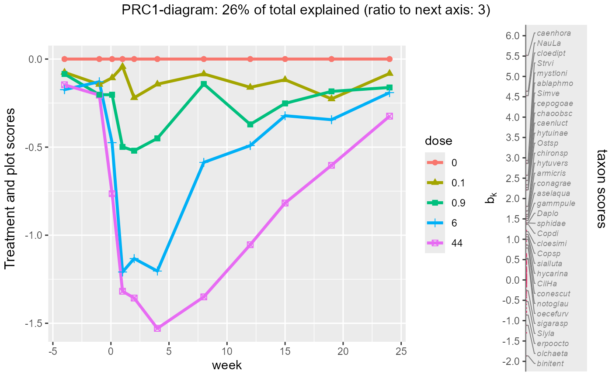
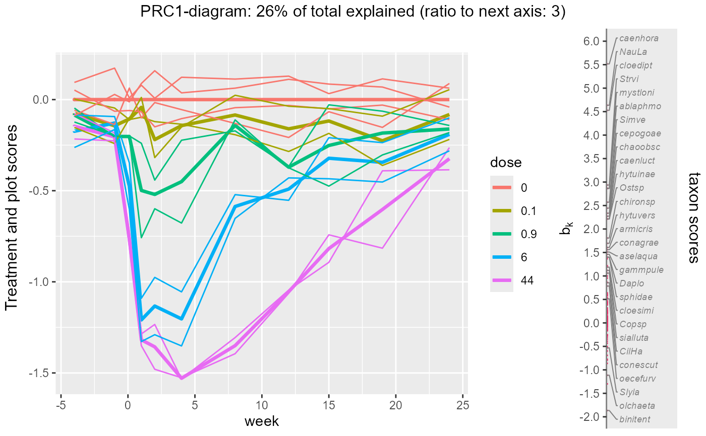

plotPRC creates a one-dimensional PRC diagram with
vertical line plot of species loadings from a result of doPRC or PRC_scores.
plotPRC(
object,
treatment = NULL,
condition = NULL,
plot = 1,
xvals = NULL,
axis = 1,
size = c(2, 2),
symbols_on_curves = FALSE,
widths = c(4, 1),
title = NULL,
left = "Treatment and plot scores",
right = "taxon scores",
threshold = 7,
y_lab_interval = 0.5,
speciesname = NULL,
selectname = "Fratio",
verbose = TRUE
)Arguments
- object
a result of
doPRCorPRC_scoresor a list with element PRCplus (a data frame with a variables to plot, see details).- treatment
character vector of names of factors in
object$PRCplus, the first two of which set thecolorandlinetypeof treatments. Default: derived fromobject$'focal_and_conditioning_factors'.- condition
character vector of names of factors in
object$PRCplus, the first one being used as x-axis. Default: derived fromobject$'focal_and_conditioning_factors'.- plot
0 or 1 (no/yes individual plot points) or character name of a factor in
object$PRCplusindicating the plots (microcosms, subjects or objects) in a longitudinal study so as to plot lines. Default: 1 yielding points instead of lines.- xvals
numeric values for the levels of the condition factor, or name of numeric variable in
object$PRCplusto be used for the x-axis. Default: NULL for which the values are obtained using the functionfvalues4levelsapplied toobject$PRCplus[[condition[1]]]- axis
axis shown; default 1, showing the first PRC axis.
- size
size of symbols and symbols in the legend. default: c(2, 2). If the length is not 2 than the first entry is replicated.
- symbols_on_curves
logical, draw symbols on the PRC curves at the measurement times (default FALSE). If
TRUE, symbols are for the treatment, if there is one, and for the second treatment if there are two.- widths
relative width of treatment PRC plot and the loading plot (see
grid.arrange).- title
overall title.
- left
left axis text (see
arrangeGrob).- right
right axis text (see
arrangeGrob).- threshold
species with criterion (specified by
selectname) higher than thethresholdare displayed. Default: 7 (which is the threshold F-ratio for testing a single regression coefficient atp = 0.01with60df for the error in a multiple regression of each single species onto the condition and the ordination axis). Ifselectnameis not inspecies_scores, thethresholdis divided by14, so that the default is 0.5.- y_lab_interval
interval of the y-axis ticks. A tick at no effect (0) is always included; default: 0.5.
- speciesname
name of the variable containing the species names (default
NULLuses rownames inobject$species)- selectname
name of the column or variable containing the criterion for the selection of species to be displayed without
"1"or otheraxisnumber. Default:"Fratio";ifselectnameis not found inobject$species_scores, set toscoresname. e.g. the"RDA1"scores.- verbose
logical for plotting and printing the current model,
score_name,conditionandtreatment(default TRUE).
Value
a list of a gridExtra object (plot using arrangeGrob)
and a list of two ggplot2 objects (the treatment PRC-diagram and the vertical line plot).
Details
The function creates the treatment PRC diagram using plot_sample_scores_cdt and the
vertical line plot of loadings using plot_species_scores_bk. These ggplot2-objects are
combined in a single object using arrangeGrob.
See also
Examples
library(PRC)
data(pyrifos, package = "vegan") #log-transformed species data from package vegan
#the chlorpyrifos experiment from van den Brink & ter Braak 1999
Design <- data.frame(week=gl(11, 12, labels=c(-4, -1, 0.1, 1, 2, 4, 8, 12, 15, 19, 24)),
dose=factor(rep(c(0.1, 0, 0, 0.9, 0, 44, 6, 0.1, 44, 0.9, 0, 6), 11)),
ditch = gl(12, 1, length=132))
#
mod_prc <- doPRC(pyrifos ~ dose:week + Condition(week), data = Design)
#>
#> Some constraints or conditions were aliased because they were redundant. This
#> can happen if terms are constant or linearly dependent (collinear):
#> 'dose44:week-4', 'dose44:week-1', 'dose44:week0.1', 'dose44:week1',
#> 'dose44:week2', 'dose44:week4', 'dose44:week8', 'dose44:week12',
#> 'dose44:week15', 'dose44:week19', 'dose44:week24'
mod_prc$focal_and_conditioning_factors$`focal factor` # as expected: "dose"
#> [1] "dose"
print(mod_prc)
#>
#> Call: rda(formula = pyrifos ~ dose:week + Condition(week), data = data,
#> scale = scale)
#>
#> Inertia Proportion Rank
#> Total 288.9920 1.0000
#> Conditional 63.3493 0.2192 10
#> Constrained 96.6837 0.3346 44
#> Unconstrained 128.9589 0.4462 77
#>
#> Inertia is variance
#>
#> -- NOTE:
#> Some constraints or conditions were aliased because they were redundant.
#> This can happen if terms are constant or linearly dependent (collinear):
#> 'dose44:week-4', 'dose44:week-1', 'dose44:week0.1', 'dose44:week1',
#> 'dose44:week2', 'dose44:week4', 'dose44:week8', 'dose44:week12',
#> 'dose44:week15', 'dose44:week19', 'dose44:week24'
#>
#> Eigenvalues for constrained axes:
#> RDA1 RDA2 RDA3 RDA4 RDA5 RDA6 RDA7 RDA8 RDA9 RDA10 RDA11
#> 25.282 8.297 6.044 4.766 4.148 3.857 3.587 3.334 3.087 2.551 2.466
#> RDA12 RDA13 RDA14 RDA15 RDA16 RDA17 RDA18 RDA19 RDA20 RDA21 RDA22
#> 2.209 2.129 1.941 1.799 1.622 1.579 1.440 1.398 1.284 1.211 1.133
#> RDA23 RDA24 RDA25 RDA26 RDA27 RDA28 RDA29 RDA30 RDA31 RDA32 RDA33
#> 1.001 0.923 0.862 0.788 0.750 0.712 0.685 0.611 0.584 0.537 0.516
#> RDA34 RDA35 RDA36 RDA37 RDA38 RDA39 RDA40 RDA41 RDA42 RDA43 RDA44
#> 0.442 0.417 0.404 0.368 0.340 0.339 0.306 0.279 0.271 0.205 0.179
#>
#> Eigenvalues for unconstrained axes:
#> PC1 PC2 PC3 PC4 PC5 PC6 PC7 PC8
#> 17.156 9.189 7.585 6.064 5.730 4.843 4.518 4.105
#> (Showing 8 of 77 unconstrained eigenvalues)
#>
# Proporti Rank
# Total 1.0000
# Conditional 0.2192 10 (between-week variation)
# Constrained 0.3346 44 (between-treatment variation across weeks)
# Unconstrained 0.4462 77 (within-week variation)
# without lines, threshold is 7
plotPRC(mod_prc)
#> The analysis is based on model
#> pyrifos~dose:week + Condition(week)
#> The current score, condition and treatment(s) are:
#> score (y-axis): PRC1
#> condition (x-axis): week
#> treatments (color ): dose
#> Set these arguments yourself if you wish otherwise.
#> 34 species with names out of 178 species
 # this threshold is about P = 0.01 for PRC1 in the regression "species_k ~ week+PRC1"
# and retains 34 species to be plotted with names
sum(mod_prc$species[,"Fratio1"] >7) # 34
#> [1] 34
# only the PRC curves:
plotPRC(mod_prc, plot = 0, symbols_on_curves = TRUE)
#> The analysis is based on model
#> pyrifos~dose:week + Condition(week)
#> The current score, condition and treatment(s) are:
#> score (y-axis): PRC1
#> condition (x-axis): week
#> treatments (color ): dose
#> Set these arguments yourself if you wish otherwise.
#> 34 species with names out of 178 species
# this threshold is about P = 0.01 for PRC1 in the regression "species_k ~ week+PRC1"
# and retains 34 species to be plotted with names
sum(mod_prc$species[,"Fratio1"] >7) # 34
#> [1] 34
# only the PRC curves:
plotPRC(mod_prc, plot = 0, symbols_on_curves = TRUE)
#> The analysis is based on model
#> pyrifos~dose:week + Condition(week)
#> The current score, condition and treatment(s) are:
#> score (y-axis): PRC1
#> condition (x-axis): week
#> treatments (color ): dose
#> Set these arguments yourself if you wish otherwise.
#> 34 species with names out of 178 species

# with lines and a stronger threshold
plotPRC(mod_prc, plot = "ditch", threshold = 10,width = c(4,1))
#> The analysis is based on model
#> pyrifos~dose:week + Condition(week)
#> The current score, condition and treatment(s) are:
#> score (y-axis): PRC1
#> condition (x-axis): week
#> treatments (color ): dose
#> Set these arguments yourself if you wish otherwise.
#> 29 species with names out of 178 species

# modifying the plot
gg <- plotPRC(mod_prc, plot = "ditch",width = c(4,1), verbose = FALSE)
# PRC plot of samples (c_dt)
p1 <- gg$separateplots$treatments +
ggplot2::ggtitle(paste("new title:", latex2exp::TeX("$c_{dt}$")))
p2 <- gg$separateplots$species +
ggplot2::ylab("new title: loadings")# loadings of species (b_k)
# Assign these plots to symbols and use grid.arrange to produce the plot
#you like, for example:
gridExtra::grid.arrange(p1+ ggplot2::ylab("")+
ggplot2::xlab("week since chorpyrifos application") + ggplot2::ggtitle(""),
p2, ncol =2, widths = c(4,1),
top = "new title", left ="PRC curves of treaments",
right = "PRC species loadings")
 # test significance of PRC/RDA axes ---------------------------------------
## Ditches are randomized, we have a time series, and are only
## interested in the first axis
library(vegan)
ctrl <- how(plots = Plots(strata = Design$ditch,type = "free"),
within = Within(type = "none"), nperm = 99)
anova(mod_prc, by = "axis",permutations= ctrl, model = "reduced",
cutoff = 0.10)
#> Permutation test for rda under reduced model
#> Forward tests for axes
#> Plots: Design$ditch, plot permutation: free
#> Permutation: none
#> Number of permutations: 99
#>
#> Model: rda(formula = pyrifos ~ dose:week + Condition(week), data = data, scale = scale)
#> Df Variance F Pr(>F)
#> RDA1 1 25.282 15.0958 0.01 **
#> RDA2 1 8.297 5.0183 0.51
#> RDA3 1 6.044 3.6089
#> RDA4 1 4.766 2.8459
#> RDA5 1 4.148 2.4768
#> RDA6 1 3.857 2.3029
#> RDA7 1 3.587 2.1420
#> RDA8 1 3.334 1.9907
#> RDA9 1 3.087 1.8434
#> RDA10 1 2.551 1.5233
#> RDA11 1 2.466 1.4727
#> RDA12 1 2.209 1.3189
#> RDA13 1 2.129 1.2710
#> RDA14 1 1.941 1.1589
#> RDA15 1 1.799 1.0740
#> RDA16 1 1.622 0.9683
#> RDA17 1 1.579 0.9426
#> RDA18 1 1.440 0.8600
#> RDA19 1 1.398 0.8350
#> RDA20 1 1.284 0.7666
#> RDA21 1 1.211 0.7230
#> RDA22 1 1.133 0.6768
#> RDA23 1 1.001 0.5977
#> RDA24 1 0.923 0.5511
#> RDA25 1 0.862 0.5150
#> RDA26 1 0.788 0.4705
#> RDA27 1 0.750 0.4476
#> RDA28 1 0.712 0.4253
#> RDA29 1 0.685 0.4088
#> RDA30 1 0.611 0.3648
#> RDA31 1 0.584 0.3490
#> RDA32 1 0.537 0.3206
#> RDA33 1 0.516 0.3080
#> RDA34 1 0.442 0.2637
#> RDA35 1 0.417 0.2492
#> RDA36 1 0.404 0.2410
#> RDA37 1 0.368 0.2196
#> RDA38 1 0.340 0.2028
#> RDA39 1 0.339 0.2025
#> RDA40 1 0.306 0.1824
#> RDA41 1 0.279 0.1665
#> RDA42 1 0.271 0.1621
#> RDA43 1 0.205 0.1222
#> RDA44 1 0.179 0.1069
#> Residual 77 128.959
#> ---
#> Signif. codes: 0 '***' 0.001 '**' 0.01 '*' 0.05 '.' 0.1 ' ' 1
# test significance of PRC/RDA axes ---------------------------------------
## Ditches are randomized, we have a time series, and are only
## interested in the first axis
library(vegan)
ctrl <- how(plots = Plots(strata = Design$ditch,type = "free"),
within = Within(type = "none"), nperm = 99)
anova(mod_prc, by = "axis",permutations= ctrl, model = "reduced",
cutoff = 0.10)
#> Permutation test for rda under reduced model
#> Forward tests for axes
#> Plots: Design$ditch, plot permutation: free
#> Permutation: none
#> Number of permutations: 99
#>
#> Model: rda(formula = pyrifos ~ dose:week + Condition(week), data = data, scale = scale)
#> Df Variance F Pr(>F)
#> RDA1 1 25.282 15.0958 0.01 **
#> RDA2 1 8.297 5.0183 0.51
#> RDA3 1 6.044 3.6089
#> RDA4 1 4.766 2.8459
#> RDA5 1 4.148 2.4768
#> RDA6 1 3.857 2.3029
#> RDA7 1 3.587 2.1420
#> RDA8 1 3.334 1.9907
#> RDA9 1 3.087 1.8434
#> RDA10 1 2.551 1.5233
#> RDA11 1 2.466 1.4727
#> RDA12 1 2.209 1.3189
#> RDA13 1 2.129 1.2710
#> RDA14 1 1.941 1.1589
#> RDA15 1 1.799 1.0740
#> RDA16 1 1.622 0.9683
#> RDA17 1 1.579 0.9426
#> RDA18 1 1.440 0.8600
#> RDA19 1 1.398 0.8350
#> RDA20 1 1.284 0.7666
#> RDA21 1 1.211 0.7230
#> RDA22 1 1.133 0.6768
#> RDA23 1 1.001 0.5977
#> RDA24 1 0.923 0.5511
#> RDA25 1 0.862 0.5150
#> RDA26 1 0.788 0.4705
#> RDA27 1 0.750 0.4476
#> RDA28 1 0.712 0.4253
#> RDA29 1 0.685 0.4088
#> RDA30 1 0.611 0.3648
#> RDA31 1 0.584 0.3490
#> RDA32 1 0.537 0.3206
#> RDA33 1 0.516 0.3080
#> RDA34 1 0.442 0.2637
#> RDA35 1 0.417 0.2492
#> RDA36 1 0.404 0.2410
#> RDA37 1 0.368 0.2196
#> RDA38 1 0.340 0.2028
#> RDA39 1 0.339 0.2025
#> RDA40 1 0.306 0.1824
#> RDA41 1 0.279 0.1665
#> RDA42 1 0.271 0.1621
#> RDA43 1 0.205 0.1222
#> RDA44 1 0.179 0.1069
#> Residual 77 128.959
#> ---
#> Signif. codes: 0 '***' 0.001 '**' 0.01 '*' 0.05 '.' 0.1 ' ' 1